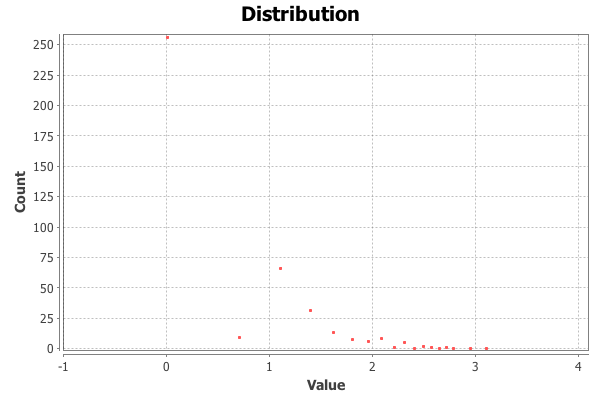

Prestige Report
Indegree Prestige
Number of directly linked nodes
Domain Prestige
Share of total nodes which can reach a node
Proximity Prestige
Considers directly and indirectly linked nodes and path-lengths
Rank Prestige
Considers specified prominence value from in-degree nodes
Using Log-Transformation: true
Default for NA Values: 1.0

Algorithms
For detailed information about the algorithms visit: https://github.com/michihenninger/prestige-gephi-plugin/tree/prestige-plugin/modules